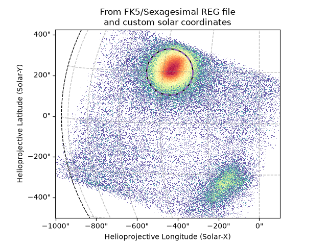
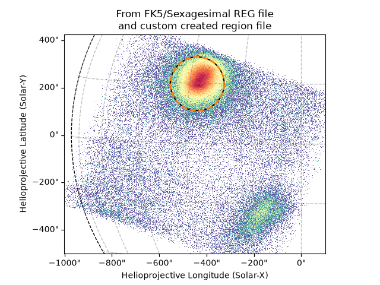

Note
Go to the end to download the full example code.
Region files
This example shows the usefulness of the region file functions in
~jdhsrpy.io and ~jdhsrpy.utils.
Note
For reasons, the only regions that can be used with the NuSTAR pipeline are circle regions.
import ntpath
import os
import urllib.request
import astropy.units as u
import matplotlib.pyplot as plt
import numpy as np
from jdhsrpy import TEST_DATA_LOCATION
from jdhsrpy.io import read_region_file, write_region_file
from jdhsrpy.nustar_core import NustarEvt, draw_grid, utc_from_nustar_time
from jdhsrpy.shapes import circle_shape
from jdhsrpy.utils import helioprojective_to_radec, radec_to_helioprojective
from jdhsrpy.visualize import shape_plot
Download an example “sunpos” NuSTAR EVT file.
url = f"{TEST_DATA_LOCATION}/test_nustar_data/nu20619003001A06_cl_sunpos.evt"
filename = os.path.join(os.getcwd(), ntpath.split(url)[1])
if not os.path.isfile(filename):
urllib.request.urlretrieve(url, filename)
url = f"{TEST_DATA_LOCATION}/test_nustar_data/fk5_sexagesimal.reg"
filename_fs = os.path.join(os.getcwd(), ntpath.split(url)[1])
if not os.path.isfile(filename_fs):
urllib.request.urlretrieve(url, filename_fs)
url = f"{TEST_DATA_LOCATION}/test_nustar_data/icrs_degrees.reg"
filename_id = os.path.join(os.getcwd(), ntpath.split(url)[1])
if not os.path.isfile(filename_id):
urllib.request.urlretrieve(url, filename_id)
Use the class to load in and work with the file.
nustar_object = NustarEvt(evt_filename=filename)
Region file contents to solar-x/y
To load in a region file, say, from SAOImageDS9, dirst a user needs to make sure the file was save with either a WCS of FK5 or ICRS.
The loader should be able to handle the values being saved in either degrees or sexagesimal regardless of the WCS.
FK5 and sexagesimal
Let’s look at a REG file saved using FK5 and in sexagesimal first.
ra_fs, dec_fs, rad_fs = read_region_file(filename_fs)
Next, let’s convert the RA and Dec values to solar X/Y.
For this, we also need a time associate with the conversion. Here, I’ve chosen the mean time of the event list.
Be mindful of the time range of the file used with SAOImageDS9. It will likely be the middle of this time range the user wants.
mid_time = np.mean(utc_from_nustar_time(nustar_object.cleaned_evt_data["TIME"]))
sun_x_fs, sun_y_fs = radec_to_helioprojective(ra_fs, dec_fs, mid_time)
[ ] 0% de436.bsp
[# ] 4% de436.bsp
[######## ] 25% de436.bsp
[################ ] 49% de436.bsp
[####################### ] 70% de436.bsp
[############################### ] 93% de436.bsp
[#################################] 100% de436.bsp
Now we have everything to define the circle region.
center_fs = (sun_x_fs, sun_y_fs)
radius_fs = rad_fs
circle_region_fs = circle_shape(center_fs, radius_fs)
Now we just have to plot the image.
Remember to look at the “Filter By Any Shape” example for different uses of the shape objects we use here.
bottom_left = [-1000, -500] << u.arcsec
top_right = [100, 425] << u.arcsec
m = nustar_object.nustar_map(bottom_left, top_right)
# now use it in plotting, this is now just Sunpy API stuff
fig = plt.figure()
ax = fig.add_subplot(projection=m)
m.plot(axes=ax)
shape_plot(circle_region_fs, m.coordinate_frame, color="k")
draw_grid(m, ax)
plt.title("From FK5/Sexagesimal REG file")
plt.show()
ICRS and degrees
We can see that the the WCS ICRS file that had the RA and Dec saved in degrees from the same region in SAOImageDS9 give the same circle.
ra_id, dec_id, rad_id = read_region_file(filename_id)
sun_x_id, sun_y_id = radec_to_helioprojective(ra_id, dec_id, mid_time)
center_id = (sun_x_id, sun_y_id)
radius_id = rad_id
circle_region_id = circle_shape(center_id, radius_id)
fig = plt.figure()
ax = fig.add_subplot(projection=m)
m.plot(axes=ax)
shape_plot(circle_region_fs, m.coordinate_frame, color="k")
shape_plot(circle_region_id, m.coordinate_frame, color="tab:red", ls=":", lw=2)
draw_grid(m, ax)
plt.title("From ICRS/Degrees REG file")
plt.show()
Solar-x/y to RA-Dec
Something very useful will be to define a region in. solar-x/y and then convert that to RA-Dec.
This could then be used to create a REG file using Python and avoids the need to move to another software in your workflow.
To show how this works and that is works correctly, let’s just assume the solar-x/y coordinates we want to convert are those we know are correct from the REG file conversion.
ra_new, dec_new = helioprojective_to_radec(sun_x_fs, sun_y_fs, mid_time)
print("Conversion comparison")
print("---------------------")
print("Original REG file RA-Dec:", ra_fs, dec_fs)
print("New RA-Dec :", ra_new, dec_new)
Conversion comparison
---------------------
Original REG file RA-Dec: 235.54390791666665 deg -19.62528111111111 deg
New RA-Dec : 235.54390791666665 deg -19.62528111111111 deg
We can plot the results on top of another to visually show the conversions are consistent as well.
sun_x_new, sun_y_new = radec_to_helioprojective(ra_new, dec_new, mid_time)
circle_region_new = circle_shape((sun_x_new, sun_y_new), radius_fs)
fig = plt.figure()
ax = fig.add_subplot(projection=m)
m.plot(axes=ax)
shape_plot(circle_region_fs, m.coordinate_frame, color="k")
shape_plot(circle_region_new, m.coordinate_frame, color="tab:purple", ls="--", lw=2)
draw_grid(m, ax)
plt.title("From FK5/Sexagesimal REG file\nand custom solar coordinates")
plt.show()

Create a region file
Using the above functionality, it is then trivial to create a REG file that is suitable for the NuSTAR data analysis software.
filename_reg = "./custom_reg.reg"
write_region_file(ra_new, dec_new, radius_fs, filename_reg)
To confirm everything has worked correctly, let’s read the new region file back in and compare it to the original coordinates.
ra_custom, dec_custom, rad_custom = read_region_file(filename_reg)
print("Custom region file comparison")
print("-----------------------------")
print("Original REG file RA-Dec & radius:", ra_new, dec_new, radius_fs)
print("New RA-Dec & radius :", ra_custom, dec_custom, rad_custom)
Custom region file comparison
-----------------------------
Original REG file RA-Dec & radius: 235.54390791666665 deg -19.62528111111111 deg 113.493 arcsec
New RA-Dec & radius : 235.54390791666665 deg -19.62528111111111 deg 113.493 arcsec
Let’s also compare by plotting both regions.
sun_x_custom, sun_y_custom = radec_to_helioprojective(ra_custom, dec_custom, mid_time)
circle_region_custom = circle_shape((sun_x_custom, sun_y_custom), rad_custom)
fig = plt.figure()
ax = fig.add_subplot(projection=m)
m.plot(axes=ax)
shape_plot(circle_region_custom, m.coordinate_frame, color="k")
shape_plot(circle_region_new, m.coordinate_frame, color="tab:orange", ls="--", lw=2)
draw_grid(m, ax)
plt.title("From FK5/Sexagesimal REG file\nand custom created region file")
plt.show()

And we see, of course, that both of these are the same.
Total running time of the script: (0 minutes 11.121 seconds)